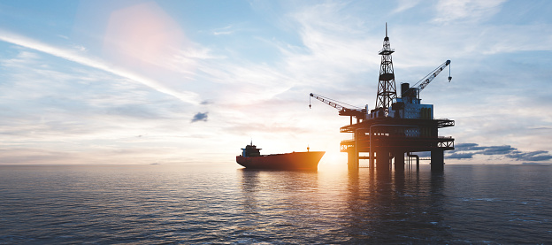
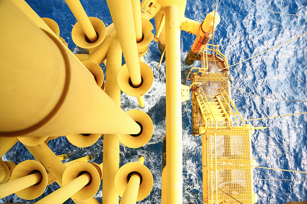

Drilling machine like the drilling fluid circulates in the borehole to aid in effecient, drilling operators that produce gauged boreholes to desired depth.
 Drilling water is a process of drilling holes for purpose of reaching groundwater source. I came-up with this idea because water is major problem expecially in our county kajiado so i saw that drilling more boreholes and wells will help both people and the livestock to access to clean and enough water. Drilling water will also improve our health -facilities as people will maintain good hygiene and diseasses like diarrhea are easly prevented. .Access to clean and fresh water enables people not to get diseasses like typhoid and cholera .Enough water will enable people to do farming and produce alot of food which will reduce drought and famine in the region.
The rise in global energy demand requires production of gas and oil resources, which is large produce of water yet the knowledge of water produce is unconvetional, so we develop a data workforce for identifying potentialy high-water producing wells drilled.